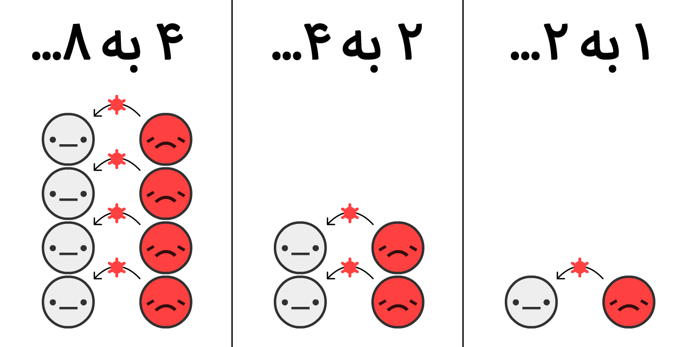
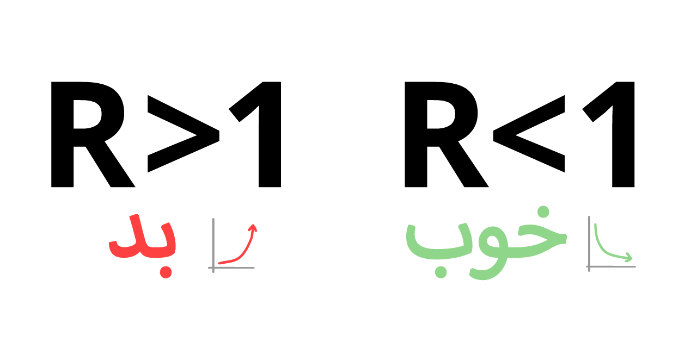
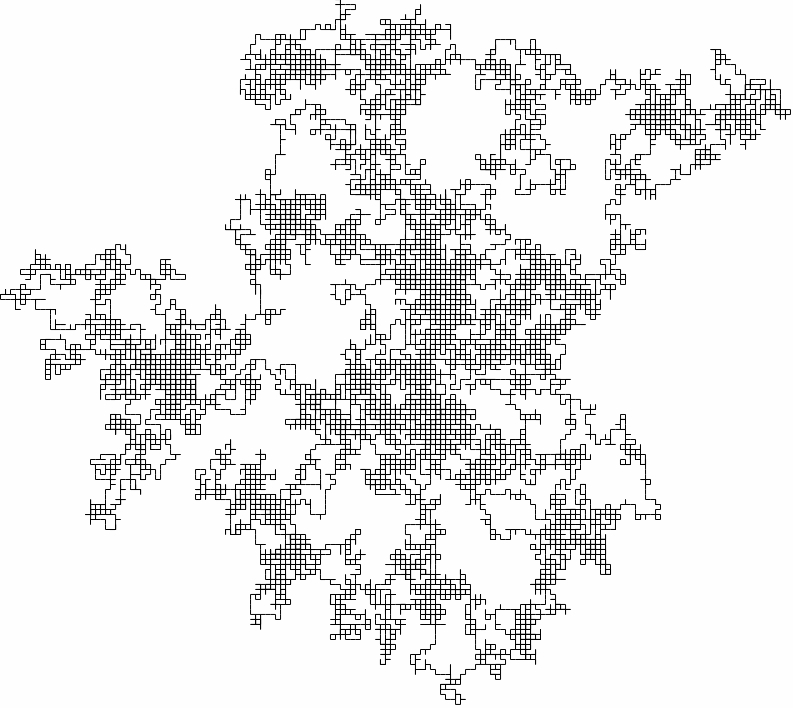
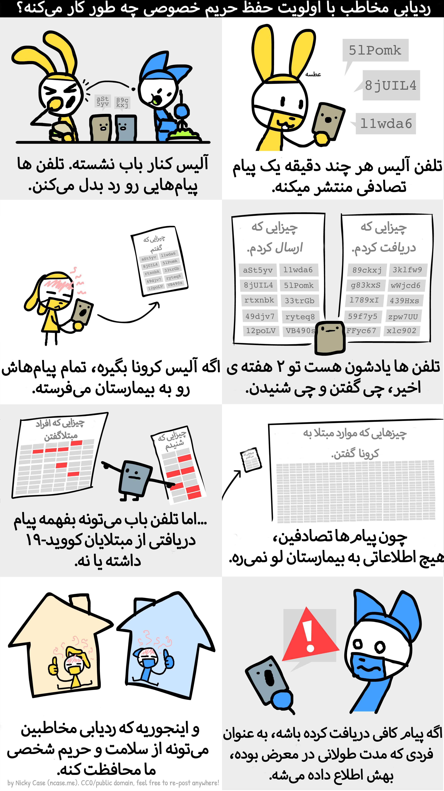
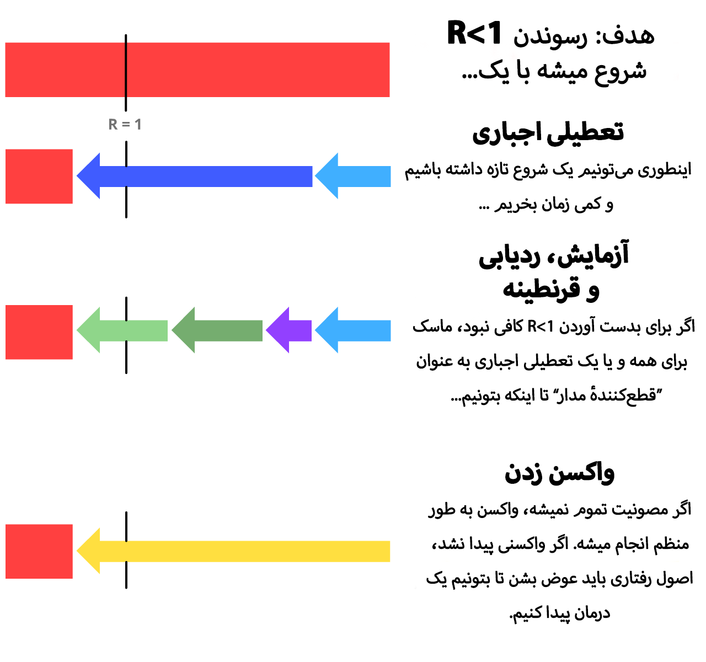
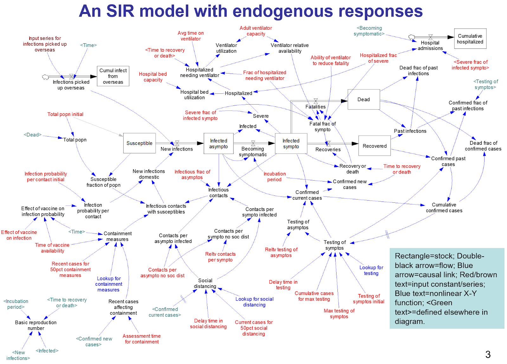

این روزا دغدغه همه شده کرونا! اینور میری کرونا، اونور کرونا:
- پسرم، قبل از خوردن غذا دستتو بشور
- ایوای این آقاهه چرا ماسک نپوشیده؟
- ولی رفیق یه چیز خوب که این کرونا داشت امتحانا دیگه خیلی روال شد:)
- دخترم، بعد اینکه غذاتو خوردی، دستاتو شستی؟
آخه دیگه چرا بعد غذا باید دستامو بشورم؟؟
این روزا کوچک و بزرگ درباره کرونا حرف میزنن. چیشده؟ مگه این کرونا چیه که انقدر درگیرش شدیم؟ چه فرقی باعث شده که انقدر با سرماخوردگی عادی متفاوت بشه؟
خب اینجا ما قراره حدود ۳۰ دقیقه وقت بذاریم و یه دور جدی تر بررسیش کنیم. همه یه سری کارای خوبی مثل زدن ماسک یا فاصله گذاری اجتماعی یا شستن دائمی دستها یا را... شنیدیم. اینجا میخوایم بررسی کنیم این کارا چقد میتونه سودمند باشه؟ مگه همین تعطیلی مدارس و دانشگاهها کافی نبوده؟
قبل از شروع ماجرا باید توجه داشتهباشیم که بهبود این وضعیت فقط کار دکترا یا سیاست مدارا نیست. هر کودوم از افراد جامعه میتونن سهم خودشون رو توی بهبود اوضاع داشته باشن. مثلا خود ما دانشآموزا یا دانشجو ها! میگید چه جوری؟ به راحتی… همین الانشم کلی چیزی بلدیم. پس شروع کنیم به بررسی. کسایی که توانهای دو رو بلدن برن بخش بعدی، کسایی هم که بلد نیستن اینهاش: ۱ ۲ ۴ ۸ ۱۶ ...
فرض کنید برگشتیم به اول دوران کرونا، طرفای بهمن و اسفند. و الان تو کشور عزیزمون ایران فقط یه بیمار مبتلا به کرونا داریم! البته که واضحه نمیشناسیمش مگرنه حتما همون اول جلوی کرونا رو گرفته بودیم! همچنین برای سادگی بیشتر مسئله فرض میکنیم سفرهای خارجی راهش بسته شده. خب، حالا بیایم ببینیم این یه نفر به تکی چه میکنه؟ چند نفر دیگه مریض میشن؟ چقدر طول میکشه تا این بیماری تموم شه از دستش راحت شیم؟
خب قبل اینکه بتونیم دقیقتر این سوالا رو جواب بدیم لازمه یه فرضایی رو در نظر بگیریم. به طور مثال اینکه فرض کنیم هر فرد میتونه حداقل ۲ نفر دیگه رو مریض کنه و بعد اینکه مریض کرد، خودش خوب میشه و تا یه زمانی دیگه مریض نمیشه.
همچنین با یه جستجوی ساده میتونیم بفهمیم الان ایران حدود ۸۱.۸ میلیون نفر جمعیت داره. خب حالا قبل اینکه پاراگراف بعدو بخونید، یکم فکر کنید که به نظرتون چند دور این انتقال باید انجام شه تا همه افراد کشور مریض شن؟( الان زمان محاسباته!)
خب بیاید یکم با شکل بریم جلو که راحتتر بفهمیم:

خب همونطور که میبینید، هر مرحله داره توانی از دو به وجود میاد. اول یه مریض داریم. بعدش اون دو نفرو مریض میکنه میشن ۲ +۱ که برابر ۳ نفر هستش که یه بار مریضی رو گرفتن و فرض کردیم مریض نمیشن دیگه. بعد هر کودوم ازونا به دو نفر دیگه میدن و میشه هفت نفر، پانزده نفر و …
خب پس ما باید توانی از ۲ منهای یک رو بیابیم که تقریبا برابر ۸۱.۸ میلیون بشه؟ درسته؟ نه! چون در اون صورت بیمار های اون دوره ۸۱.۸ میلیون میشن. ولی ما نیاز داریم جمع تمام مریضا این عدد شه. خیلیاتون جمع این عدد رو میدونید:
۱ + ۲ + ۴ +… + ۲n
جمع توانهای دو از صفر تا n میشه ۲n+1 خب ینی ما توانی از دو رو می خوایم که بشه n+1. باید خیلی عدد بزرگی باشه نه؟ با یه ماشین حساب ساده و استفاده از لگاریتم(در صورتی که با این تابع آشنا نیستید تو پانویس گفتیم.) میتونید این عدد رو بدست بیارید. تقریبا میشه ۲۶.۲۸ . خب پس n میشه حدود ۲۷. پس تمام! واقعا تو ۲۷ مرحله تا حالا همه باید مریض میشدیم؟ پس چرا الان من مریض نیستم؟
شاید فکر کنید چون خانوادههامون تا حالا نذاشتن ما بریم بیرون پس نگرفتیم و هیچ وقت نخواهیم گرفت. خب بیایم و فرض کنیم ۵۰ درصد از افراد خونه میمونن همیشه. پس طرفای ۴۰ میلیون نفر دیگه باید تا حالا مریض شده باشن! ولی تا همین امروز که من الان نگاه کردم در نهایت ۲۵۰ هزار نفر تو ایران مریض شدن! ( لینک آمار دقیق الان )
خب پس کجای محاسبات مون مشکل داره؟ نکنه بخاطر اینه که بعضیا از ماسک استفاده میکنن؟
نه، قضیه چیز دیگهایه… اینکه کرونا بعد از یه مدتی ناتوان میشه! ینی چی خسته میشه؟ نه، وقتی که یکم میگذره و تعداد خوبی میگیرن مریضی رو، کسایی که گرفتن و خوب شدن احتمال دوباره گرفتنشون کممیشه و همینطوری که پیش میریم، این افراد به صفر متمایل میشه. یعنی کسی نمیمونه که امکان ابتلا به بیماری رو داشته باشه! این موقعس که دیگه بیماری شروع به کمشدن و ناپدید شدن میکنه. پس همون طور که میبینید اینجوری نیست که نمایی بره بالا دائم و یه وابستگی به تعداد افرادی که هنوز مریض نشدن داره… باید اینو بررسی کنیم که چی میشه که بعد یه مدتی بیماری تموم میشه؟ آیا میتونیم اون روز رو سریعتر برسونیم؟
البته اگه توجه کرده باشین ما فقط درباره دوره مریضی حرف زدیم… در صورتی که این دورهها یکی دو روزه نیستن، به طور میانگین این زمان انتقال یک دوره رو ۱۰ روز در نظر میگیرن که ۲۷ دورش میشه تقریبا ۲۷۰ روز ینی ۹ ماه! پس شاید اونقدام چیزای عجیبی بدست نیاوردیم؟
ولی نه! قضیه اینه که محاسباتمون کاملا اشتباه بودن. چون خوشبختانه طبق تجربه به دست اومده که این آمار به صورت نمایی رشد نمیکنه(وگرنه بدبخت میشدیم! ) ولی سوال اینه که چرا؟ برای پاسخ به این سوال به ابزارهای دقیقتری داریم! باید سعی کنیم داستان رو به شکل ریاضی تعریف کنیم تا ببینیم چه جوری رشد میکنه؟
مدلسازی چیزیه که ما تا حالا کم داشتیم. ولی مدلسازی یعنی چی؟ شاید تعریفشو توی کتاباتون دیده باشین، مثلا تو کتاب فیزیک۱ دهم دبیرستان میگه:
مدلسازى در فیزیک فرآیندیاست که طیآن یک پدیده فیزیکی، آنقدر ساده و آرمانی میشود تا امکان بررسی و تحلیل آن فراهم شود.
خب حالا این ینی چی؟ شاید شمام عین زمانی که من برای اولین بار خوندمش کنار نیومدید باهاش. ولی مطمئنا خودتون بارها ازش استفاده کردید! مثلا توی یه سری از مسائل فیزیک دیدید که میگه یه قطار از تهران میره مازندران و دیگری از کرج به مشهد مقدس. حالا قراره ببینیم آیا این دو تا با هم برخورد میکنن یا نه؟ خب اگه دیده باشید اینجا میایم یه دستگاه مختصات تعریف میکنیم و معادلات خط دو قطار رو مینویسیم و اینجوری مسئله رو ساده میکنیم تا حل شه. این دقیقا همون مدلسازیه! به همین سادگی…
خب حالا تو مورد ما چه جوری باید مدلسازی کرد؟ ما که مختصات نداریم؟ اصن مدل سازی ینی فقط دستگاه مختصات و نقطه و خط؟
مدلسازی تعریف کاملتری داره، وقتی که میخوایم یه پدیدهی واقعی(مثل کرونا) رو بررسی کنیم، میایم و اون پدیده رو به زبان ساده اون علم مدنظرمون(نه فقط فیزیک!) ترجمه میکنیم.
خب معلومشد میخوایم چیکار کنیم. میخوایم کرونا رو مدلسازی کنیم به زبون آمار. حالا باید بررسی کنیم چه چیزایی رو لازم داریم و باید لحاظ کنیم؟
خب امیدوارم تا حالا که داشتیم مرور میکردیم حوصلتون سر نرفته باشه! چون ازین به بعد چیزای خیلی جدیدی داریم!
به نظرتون چه چیزایی الآن برامون خیلی مهمه که شبیهسازی شون کنیم؟ چه متغیرایی رو باید مدنظر بگیریم؟
مثلا اینکه مدارس برگزار بشن ممکنه از عوامل تاثیر گذار باشه از نظرمون. یا رعایت نکات بهداشتی هم همینطور. خیلی موارد زیادی پیدا میشه که حتی کمترین تاثیرو بذاره. مثلا آیا لازمه آدما رو بر حسب سنشون تقسیمبندی کنیم با توجه به اینکه میدونیم درصد مردههامون بیشتر آدم بزرگان؟ یا اینکه لازمه تکتک مختصات اماکن پر ترددمون رو مثل مدارس و دانشگاهها بیاریم تو شبیه سازی؟(زمان تفکر)
معمولا مدلسازیای خوبه که مختصر و مفید باشه. با کمترین متغیر ها بیشترین اطلاعات رو بدست بیاریم. خب واضحه که از مهمترین مواردی که برامون مهمه تعداد بیمارا در حال حاضره. ازین به بعد به این دست از افراد مبتلا (Infectious) میگیم که با حرف I انگلیسی نشونش میدیم.
خب حالا فرض کنیم یه شهر داریم که ۵ نفر توش مریضن. بعدش چه اتفاقی میافته؟ چن نفر تو روزای بعد مریض میشن؟ به نظرتون تا وقتی ندونیم کلا چن نفر داریم این چیزا مشخص میشه؟
پس ظاهرا لازمه کل افراد رو هم داشته باشیم. اینها افرادی هستن که امکان داره توسط گروه I بیمار شن. پس بهشون مستعد (Susceptible) میگیم و با حرف S نشون میدیم.
یه چیز دیگه کم داریم. گفته بودیم بعد زمانی بالاخره افرادی که مبتلا میشن خوب میشن. یا متاسفانه متاسفانه فوت میشن:( (انشالله که روزی برسه این دسته صفر شن) پس لازمه تعداد افرادی که خوب میشن رو هم درنظر بگیریم که بهشون میگیم بهبودیافته (Recovered) یا به اختصار R.
ولی ما اینجا برای راحتی در محایه چیز دیگه کم داریم. گفته بودیم بعد زمانی بالاخره افرادی که مبتلا میشن خوب میشن. یا متاسفانه متاسفانه فوت میشن:( (انشالله که روزی برسه این دسته صفر شن) پس لازمه تعداد افرادی که خوب میشن رو هم درنظر بگیریم که بهشون میگیم بهبودیافته (Recovered) یا به اختصار R.
ثبات این ایمنی رو بینهایت درنظر میگیریم. یعنی هر فرد فقط یه بار بیمار میشه.
تعداد مردهها چی؟ اون که خیلی مهمه برامون؟ بله درسته مهمه. ولی بازم به هدفمون از مدلسازی برمیگرده و اینکه میخوایم تا میتونیم مدلسازی رو ساده کنیم. شاید به نظرتون این جور ساده سازی دیگه زیادهروی بیاد! ولی یکم فکر کنید متوجه میشید که دسته بهبود یافته افرادیهستند که دیگه به دسته مستعد برنمیگردن و اگه این دسته رو با فوتشدگان یکی بگیریم، فرقی تو مدل سازی ما تاثیری نخواهد گذاشت.
ثبات این ایمنی رو بینهایت درنظر میگیریم. یعنی هر فرد فقط یه بار بیمار میشه.
به نظرتون چه چیزایی توی شکل نمودار SIR تاثیر دارن؟ به خصوص درباره شیب قبل از قلهاش؟ یکم فکرکنید به این موضوع...؟
مثلا اگه تعداد پروازهای داخلی زیاد شه، احتمال داره تعدادی بیمار وارد کشور شه و سرعت شیوع بیماری رو افزایش بده... چیز خوبی گفتیم! سرعت شیوع بیماری… این دقیقا همون شیب تابع یا خط I هستش. که نشوندهندهی سرعت افزایش بیماران مبتلاعه. هر چی شیب بیشتر باشه، یعنی توی یه روز تعداد بیمارا داره سریعتر میره بالا. پس باید تا میتونیم سعیکنیم این شیب رو کم کنیم. اینجوری قلههای کوچک تری هم خواهیم داشت و بیماران کمتری.
دیگه چهجوری میشه افزایش یا کاهش دادن این سرعت شیوع رو؟ مثلا اگه فرض کنیم الان تو یه جامعهای i نفر مبتلا داشته باشیم و s نفر در معرض ابتلا باشن،ولی تو یه جامعه دیگه i نفر مبتلا باشن و تعداد افراد در معرض 2s باشه،به نظرتون جامعه در وضعیت بدتریه؟ ینی کودوم یکیش هست که سرعت افزایش بیماری توش بیشتره و وضیت خطریتره؟
میدونیم وقتی افراد مریض زیاد تر باشن خب سرعت شیوع بیشتر خواهد بود. ولی تعداد افرادی که در معرض ابتلا هستن هم آیا تاثیر خواهد داشت؟
جواب بله هستش. هر چقدر افراد بیشتری در معرض باشن، باز هم احتمال شیوع بیماری بالا میشه. چون افراد بیشتری وجود دارن که در صورتی که اون افراد مریض رو ملاقات کنن، به بیماری مبتلا شن. پس واضحه که جمله SI که حاصل ضرب افراد مبتلا و افراد در معرض ابتلا هستش مقدار مهمی رو بهمون نشون میده، چرا که در واقعا داره میگه که هر کودوم ازین I نفر که مریضن میتونن S نفر رو ببینن و مبتلا کنن…
نه اینکه قراره S*I تا بیمار اضافه شه فردا! نه! صرفا اینکه یه معیاریه که بهمون نشون بده انقد مورد محتمل به ابتلا هست. در واقع اگر در ضریبی ضرب شه که ازین موارد چقد احتمال داره هر کودوم واقعا مریضی رو بگیرن، این میشه، پارامتری به نام بتا که تا حد خوبی شکل نمودارمون رو کنترل میکنه. پس بریم ببینیم با کم و زیاد کردن این پارامتر چه جوری شکل نمودارمون تغییر میکنه؟
یک نمودار که توانایی تغییر بتا و تاثیر اون روی SIR رو در اون داشته باشیم.
تو نمودار بالا میتونید با تغییر مقدار بتا در هر زمان حتی در زمان تشکیل جدول، باعث تغییر شکل جدول بشین. ببینید که کم و زیاد کردن بتا چه تاثیری روی شکل جدولمون داره؟
خب حالا که ی دیدی نسبت به نمودار واقعی مبتلایان بر حسب زمان گرفتیم، میتونیم بفهمیم که توی بخش محاسبات سرانگشتی، چرا اشتباهات محاسباتی داشتیم. اگه یکم دیگه با این جدول بازی بازی کنید، میبینید که این مقدار بتا که با ضرب S و I متناسبه، داره باعث تغییر نمودارمون میشه، در واقع هرچی beta بزرگتر باشه، ینی ضرب SI بزرگتره و اگه ببینید نمودار قلهاش تیز تر میشه! و برعکس، اگر beta کم باشه، شیب قبل قله آرومتر صعود میکنه. پس فهمیدیم که سرعت شیوع فقط به تعداد افراد بیمار بستگی نداره بلکه تعداد افراد قابل ابتلا هم تاثیر جدی میذاره. طوری که اگه کسی پیدا نشه که قابلیت ابتلا رو داشته باشه یا کم باشن این افراد(مثل نوک قله) بیماری شروع به کم شدن میکنه تا در نهایت ناپدید شه!
خب دیدیم که یه قله داشتیم تو نمودارمون. ولی آی از دست این قله… همه گرفتاریهامون از دست اینه! هر تلاشی که داره انجام میشه توی هر کشوری در راستای خوابوندن این قلهاس. حالا مگه چیه قله بزرگ باشه. بعدش که همه قراره خوب شن دیگه؟
نه! قضیه اینه که خوب شدن همینجوری نیست. بیمار کرونا نیاز به درمان داره. نیاز به رسیدگی داره. نیاز به تخت بیمارستان داره. به خصوص تخت ICU. بیاین یه دیدی بگیریم. توی ایران حدود ۷ هزار تخت ICU وجود داره. ینی حدود 0.0086 درصد جمعیت کشور. از طرفی میدونیم که این تختها از زمان شروع کرونا هم خالی خالی نبودن و بخاطر وجود مریضیهای دیگه خیلیهاشون پر بودن. بیایم فرض کنیم ازین ۷ هزار تا ۳ هزارتاشون هم از اول پر بودن. درباره کرونا میدونیم تقریبا از هر ۲۰ بیمار یکیشون حالش وخیم میشه و نیاز به تخت ICU پیدا میکنه. حالا حساب کنید کافیه که حدود ۸۰ هزار بیمار داشته باشیم. اون موقع دیگه همه تختا پر میشن و اونجاس که دکترا باید دستی بین افراد انتخاب کنن که زندگیشون رو نجات بدن.( جالبه بدونید بار اول که این متنو نوشتم تختا پر نبودن و خیلی خوشحال بودم و نوشتم خدا رو شکر که الان به اون نقطه نرسیدیم. اما الان که برای تصحیح نهایی اومدم طبق آمار و اخبار متاسفانه تمامی تختهای ICU پر هستند. ایکاش یکم بیشتر به این موضوع توجه میکردیم که به اینجا نمیرسیدیم!)
پس فهمیدیم که قله رو تا میشه باید بخوابونیم! تا هیچ وقت اصلا به خط ظرفیت نزدیک هم نشه. حالا چه جوری؟ درباره پارامتر بتا شنیدیم که میتونه شکل نمودارمون رو تغییر بده. خب حالا در واقعیت چه راه حلی وجود داره که بتونیم این پارامتر و کم کنیم؟ اصلا دیگه چه عواملی تاثیر دارن روی شکل نمودار؟ آیا فقط این بتاس؟
خب اینکه نحوه رسم نمودار چه شکلیه خارج از بحثه و باید توی پانویس بخونید. اما میتونیم با بررسی یه سری پارامترها (مثل همون بتا) تو این نمودار هم یه سری دستکاریهایی بکنیم. دیگه وقتشه که با مهمترین پارامتر موجود آشنا بشیم.

شاید خیلیهامون اسم پارامتر R یا R0 (یا همان R-nought) رو شنیدهباشیم. این متغیر که از مهمترین متغیرهای یک اپیدمی به حساب میاد، معادل کل تعداد افراد مستعد هستش که یه فرد از دسته مبتلايان میتونه تو دوران بیماریش اونا رو مبتلا کنه. مخفف کلمه انگلیسی Reproduction number یا همون عدد سرایت. R0 برابر این مقدار در همون دروان اول شیوع اپیدمی هستش.
اگه بخوایم یکم درباره کرونا بدونیم، مقدار R0 در ایران در هفته اول برابر 4.86 بوده! و این ینی فاجعه. چون اگه همینجوری پیش میرفت خیلی سریعتر از اون محاسباتی که تو بخش اول با تابع نمایی کردیم، میتونست کل کشور عزیزمون رو در بر بگیره! بدتر از اون بعضی منابع R0 رو برای شهر ووهان چین 5.7 تخمین زدن!
البته توجه کنید اینکه عددمون اعشار داره منظور این نیست که مثلا یه مبتلا میتونه یه نصفه آدم یا یه بچه رو مبتلا کنه! نه بلکه این عدد یه میانگینه.
ولی خب خدا رو شکر به مرور این عدد کم شد و حتی همون هفته ۴م به ۲.۱ رسید! همچنین جالبه بدونین که این عدد برای آنفلونزای فصلی حدود ۱.۲۸ هستش.
الانا هم این عدد برای کرونا همون حوالی ۲ هستش. ولی اونقدرا هم خوشحال نشید… همچنان خبر خوبی نیست چون که هر فرد داره حداقل دو نفر رو مریض میکنه! خب این مگه نمیشه همون نمودار نمایی که اولش محاسبه کردیم؟ نه چون همونطور که در بخش قبل هم اشاره کردیم، هرچقد جلو تر میریم، تعداد افراد در معرض ابتلا کم میشه و این عدد کم و کمتر میشه تا به زیر ۱ میرسه. حالا چرا برامون جالبه که این عدد زیر ۱ باشه؟
خب اینجا باید یه نکته کلیدی رو باهاتون درمیون بذاریم. R باید بره زیر ۱! چرا؟ چون اگه مقدار R زیر ۱ باشه، در واقع کمتر از یک نفر رو میتونه مبتلا کنه، یعنی وقتی خودش درمان بشه، تعداد کل بیمارا کاهش پیدا میکنه. و به مرور زمان این تعداد کم و کمتر میشه. اینه! دقیقا همینه راه درمانشه! پس این تصویر رو همیشه به یاد داشته باش.

خب پس ما مشکلو حل کردیم ظاهرا. بریم به زندگیمون برسیم. کجاااا؟ R رو چه جوری کمش کنیم حالا؟ ولوم تلویزیون نیست که با دکمه کم شه؟ نه! این کار روشهای بسیاری داره. و نیاز به سیاستگذاریهای کلان داره تا به بقیه مسائل کشوری مثل اقتصاد لطمه نخوره. یکم سعی کنید پیشنهادهای متفاوت بدین بعد برین سراغ بحث بعدی. مثلا من نظرم اینه که باید مدارسو تعطیل بذارن باشه همیشه(:دی) خب به نظرتون با این حرکت چه اتفاقایی میافته؟ شاید بگید امتحانا خیلی آسون میشه و راحت میشیم:) تا حالا به ضررهاشم فکر کردید؟ آیا ضریب یادگیری براتون توی کلاسای مجازی پایین نیمده؟ یا دسترسیتون که به معلم کمشده کارا سختتر پیش نمیره؟ اینا همه سوالاییه که برای تصمیم گیری واقعی تو کشور باید بهش فکر کرد.
قبل اینکه بریم و راه حل پیدا کنیم برای کرونا، نیاز به یه الگوریتم ساده داریم که مدلسازی مارو کاملتر کنه تا بتونیم یه سری دیگه از حرکات جامعه رو درک کنیم.
این الگوریتم یه الگوریتم خیلی بدیهی اما بسیار کاربردیه. راه رفتن تصادفی یا Random walk الگوریتمیه که ما میتونیم رفتوآمد مردم در شهر به اون شبیه سازی کنیم.
همون طور که از اسمش معلومه قراره به طور تصادفی قدم بزنیم! فرض کنید در نقطه صفر و صفر محور مختصات وایسادید و هر دفه به صورت کاملا رندوم به یکی از ۴ جهت موجود(بالا، پایین، چپ یا راست) حرکت میکنید. به نظرتون اگه ردپاتون رو ثبت کنید چه شکلی میشه؟ شبیه چیز خاصیه؟ بریم ببینیم.

اینم از الگوریتم به این سادگی! حالا ممکنه که این الگوریتم توی یک یا دو یا سه یا … بعد هم انجام بشه. که نتیجش میشه:

چقد قشنگ شد من که خیلی خوشم اومد:) ممکنه اسم این یکی رو شنیده باشید. این دقیقا همون حرکت براونیه که توی کتاب شیمی گفتن بهمون.
راه اول هیچ کاری نکنیم:
بیاید و کاملا بیخیال شیم! بابا همون اول مقاله هم گفتیم همه دارن الکی زور میزنن! ساده بگیریم همه چی به خوبی و خوشی تموم میشه بلاخره یه زمانی دیگه! اگه شمام با این عقیده موافقید بیاید این بخش رو بخونیم و ببینیم در صورتی که همه این نگرش رو داشته باشن چه اتفاقی خواهد افتاد؟
خب واضحه که در اون صورت خبری از رعایت فاصله گذاری اجتماعی یا عدم دست دادن یا … نیست. حتی چون مدارس و مراکز پرتردد بازه احتمال ابتلا به بیماری به سرعت اوج میگیره. حالا اینا واقعا روی مقدار R چه تاثیر خواهند گذاشت؟ برای بررسی این مسئله بیاید نمودار زیر رو ببینیم.
خب اتفاقای خوبی نیفتاد! این رو تحقیق ۱۶ مارس امپریال کالج لندن کشف کرد که: هیچ کاری نکنید، اونوقت تختهای ICUمون تموم میشه و بیش از ۸۰٪ مردم مبتلا به بیماری میشن.
حتی اگه در بهترین حالت ۰.۵٪ درصد افراد مبتلا فوت شن(چون وقتی تخت ICU کم بیاد تقریبا همچین فرضی غیرممکنه!) ۰.۵٪ از ۸۰٪ ۸۱.۸ میلیون = ۳۲۷.۲ هزار نفر از جمعیت کشورمون کم میشد:(( البته فقط در صورتی که هیچ کاری نمیکردیم! پس قطعا این راه احمقانه ترین حرکته!
پایهگذاری اخلاقهای اجتماعی(شستن دست و فاصله گذاری اجتماعی و ماسک و ...)
بیاید با سادهترین کارایی که از نظر عامه مردم بیفایده هستن شروع کنیم! تو نمودار زیر میتونید درصد آدمایی تو جامعه مدنظر که از این قوانین رعایت میکنن رو مشخص کنید. خودتون امتحان کنید. حتما به مقدار R تو حالتهای مختلف توجه کنید.
نه! مثکه یه فایدهای داشت! اگه با نمودار قبلی مقایسهاش کنید متوجه میشید که حتی اگه نصف جامعه این قوانین رو رعایت کنن، تغییر قابل توجهی در مقدار R خواهیم دید! چند درصد از افراد خانوادتون ملاحظات مربوط به کرونا رو انجام میدن؟ اگه فرض کنید تو کل ایران هم همین درصد برقرار باشه، نمودار رو با اون درصد تنظیم کنید و ببینید چه بلایی سر R میاد؟
خب ولی دیدید که با این مورد نمیتونیم مقدار R رو برای همیشه زیر ۱ نگه داریم.
پس راه بیفایدهای نیست اما کامل هم نیست و نیاز به راهحلهای جانبی داره. چون تنها راه مهارکردن واقعی ویروس اینه که مقدار R رو زیر ۱ بیاریم نه اینکه فقط کمش کنیم.
تعطیلی اجباری
یه راهی که یه زمانی حتی تو کشور خودمون خیلی جدی جلو رفت روش تعطیلی اجباری همه اماکن بود. مثلا دانشگاهها و مدارس از اواسط اسفند تعطیل شد. یکم بعدش همه مراکز تجاری حتی مغازهها هم مجبور بودن ببندن تا حدودای اواخر فروردین! این روش یه روشی به حساب میاد که میزنه کمر نمودارو میشکونه! فرض کنید تمام مدارس و دانشگاهها و حتی مراکز تجاری و رفاهی و اداری تعطیل باشن! بیاید بررسی کنیم چه اتفاقی میافته؟
قبلش یه نمودار داریم که با همون رندوم واکه فرقش اینه که یه مرکز پرتردد هم وسطش داریم که خیلی از آدم ها به اونجا مراجعه میکنن. تاثیر همچین اماکنی قابل توجه هستش واقعا! خودتون ببینید
برای مقایسه با حالت بسته بودن این مرکز پرتردد دکمه حذف مرکز رو بزنید. متوجه میشیم که با بودن این مرکز در پایان تقریبا ۹۸ درصد مردم بیمار شدن. همچنین مقدار R به ؟؟؟ میرسه در صورتی که اگر این مرکز بسته باشه نهایت ۸۰ درصد مبتلا میشن و مقدار R حداکثر به ؟؟؟ میرسه. پس با تعطیل بودن یک مرکز تجاری هم حتی میشه تغییرات قابل توجهی ایجاد کرد و اگه همه این مراکز بسته باشن، میتونیم برای همیشه مقدار R رو زیر ۱ نگه داریم!
خب حله دیگه! بیایم و همه جا از جمله مدارسو تعطیل کنیم! مام که خوشحال:) اما این همهی داستان نیست! تا کی آخه؟ تا کی میتونیم این تعطیلی رو تحمل کنیم؟ میدونید چه تاثیرهای منفیای روی اقتصاد جامعه میذاره اینجور تعطیلیها؟ میدونید باعث خیلی از افسردگیها و مشکلات روانی به علت فقر و تنهایی و بسیاری از مسائل دیگه خواهد شد؟
پس شاید باید بیشتر سر این مورد تفکر کنیم… بیاید فرض کنیم تعطیلی پشتسر هم نداریم. بیاید مقطعی تعطیلی رو داشته باشیم. این طوری که تا تعداد بیمارا به حدود ظرفیت بیمارستانا میخواد برسه، تعطیلی رو اعمال میکنیم. در این صورت چه اتفاقی خواهد افتاد؟
خب مثکه یکم بهتر شد! چون تونستیم تعداد بیمارا رو زیر خط ظرفیت بیمارستانا نگه داریم. ولی بازم آیا عملیه که اینهمه تعطیلی داشته باشیم؟ چه تاثیراتی بر جامعه خواهد گذاشت؟
پس بازم نمیشه از تعطیلیها به تنهایی به عنوان راه حل اشاره کنیم. اما میتونیم زمانایی که کمبود امکانات داریم و اوضاع بهم ریخته و مقدار R خیلی زیاد شده، به عنوان یه راه بهش نگاه کنیم که به دادمون برسه و یکم اوضاع رو آرومتر کنه.
تابستان باعث از بین رفتن کرونا میشه:
شاید خیلیامون شنیده باشیم که گرما باعث از بین رفتن کرونا میشه. این حرف چقدر درسته؟ فصل تابستان در این جریانات بیتاثیر نخواهد بود اما قطعا نابود کننده کرونا نخواهد بود و فقط آمار کرونا کم خواهد کرد. پس بیاید نمودارشو ببینیم
اما دیدیم که تابستون به تنهایی واقعا هیچکار خاصی نمیتونه بکنه. چون حتی نتونست R رو زیر ۱ بیاره. تازه اگر دقیق تر دقت کنید، بعد تابستون اتفاقات خوبی نیفتاد! تابستان هم مثل تعطیلی عمل کرد. ولی چرا؟ چون وقتی جلوی رشد کرونا گرفته شه، همین جوری پتانسیل زیاد شدن بیماری بالا میره، و وقتی اون محدودیت برداشته شه…
پس تابستون به دادمون نخواهد رسید! نمیشه صبر کرد تا برسه و انتظار معجزه داشته باشیم.
قرنطینه:
این کلمه رو اینروزا خیلی میشنویم! بدتر ازون خیلی موقعها مجبورمون میکنن رعایتش کنیم که واقعا هم زور داره! شاید خیلیامون باشیم که همینالانش ماههاس از خونه خارج نشدیم! ارزششو داره اینکار؟
میشه گروههای مختلفی رو قرنطینه کرد. به طور مثال:
-
یه شهر رو قرنطینه کنیم و نذاریم کسی ازش بیرون بیاد یا کسی بهش وارد شه.
به نظرتون این نوع قرنطینه چه زمانی موثر خواهد بود؟ برای بررسی جواب این سوال یکم نمودار زیر رو دستکاری کنید.
. نمودار قرنطینه شهر ها با قابلیت تغییر درصد قرنطینه و بیمارهای هر شهربرای راهنمایی سعی کنید یه شهر رو چن تا مریض توش بذارید و بقیه شهر ها رو پاک نگه دارید. بعد ببینید چه اتفاقی میافته؟ حالا سعی کنید اون شهری که مریض داره رو قرنطینه کنید به یه درصدی، یا یه شهری که هیچ مریضی نداره رو قرنطینه کنید. خب واضحه که هیچ وقت هیچکی توش مریض نمیشه! و خب این خیلی عالی خواهد بود…
ولی خب مشکل اصلی یه جای دیگس. اگه یکم بعد از پخش شیوع کرونا و قرنطینگی رو شروع کنیم چی؟ هیچی، از نمودار واضحه که هیچ اتفاق مثبتی نخواهد افتاد و تقریبا فرقی با قرنطینه نبودن نداره. پس این روش فقط همون اول که ویروس پخش نشده به دردمون میخوره و خب مشکل هم اینه که اون اول هم بدون اینکه فهمیده باشیم خیلیا که مریضیشون محرز نبوده به شهرهای مختلف سفر کرده بودن و دیگه کار از کار گذشته بود!
-
. قرنطینه خانگی که باعث میشه آدمای مختلف کمتر احتمال داشته باشه همو ببینن. بیاید این یکی رو با یه نمودار رندوم واک با آدمایی که یه تکونای کمی می خورن ببینیم.
نمودار رندوم واک با قابلیت افزایش درصد حرکت و قرنطینگی نقاط در واقع نقاط باید سر جای خودشون وایسن و حرکتشون خیلی کم باشه دور خودشون
تاثیر بینظیر قرنطینه رو دیدیم! خیلی راحت میتونه جلوی شیوع کرونا رو بگیره و مقدار R رو به حتی ۰ برسونه! ولی یه مشکلی هست! اینکه ملت بعد از یه زمانی خسته میشن معمولا و میان بیرون! رد خورم نداره این حرف. چون همین الان که من دارم این متنو مینویسم حتی با وجود آشنایی با کرونا هوس یه سفر کردم!(البته که نمیرم:) )
-
قرنطینه بیماران:
خب این آخرین روشه برای قرنطینه که توش میایم و بیمارای مبتلا به کرونا رو به یه روشایی پیدا میکنیم و بعدش اونا رو قرنطینه میکنیم که از افراد مستعد دور باشن و افراد کمتری رو مریض کنن.
ولی قبل ازینکه بریم سراغ توصیف اینروش باید بگیم که مدلمون یه نقصی داره تا بتونیم علت اینراه حل رو بنویسیم. هر کس مریض میشه یه دوره ای از مریضیاش هست که هیچ علائمی نداره ولی در عین حال میتونه مریضی خودشو به بقیه منتقل کنه! این خیلی بده! چون به هیچ وجه نمیفهمه طرف و ممکنه به کلی از دوستان و آشنایانش بده بدون اینکه بتونیم جلوشو بگیریم و قرنطینش کنیم! پس باید چیکار کرد؟
خب با دونستن این حقیقت بیاید و رندوم واکمون رو دوباره شبیهسازی کنیم. این دفعه افرادی که به رنگ زرد در میان در همون دوران بیماری بدون علائمشون هستن.
نمودار رندوم واک با بیمار های بدون علائم و با قابلیت تنظیم دوران بی علائمی همچنین با قابلیت قرنطینه افراد مریض و تعیین زمانی که بعد از معلوم شدن مریضی شون قرنطینهشون میکنیم.خب حالا بیاید و سعی کنید با زدن علامت قرنطینه این افراد مریض رو در اولین فرصت ممکن قرنطینه کنید. چقد عملیه این کار؟ فرقشو با زمانی که قرنطینه نمیکنیمشون ببینید و درصد افرادی که در نهایت سالم میمونن رو مقایسه کنید.
خب متوجه شدید که اگه وایسیم تا خود مردم بگن ما مریض شدیم و سعی کنیم قرنطینشون کنیم خیلی دیر میشه. چون علاوه بر دوران بدون علائمیشون، خیلیا کلی وقت بعد از اینکه فهمیدن مریضن مراجعه میکنن یا حتی اصلا به دکتر مراجعه نمیکنن! پس باید یه کاری کنیم قبلا اینکه مریضیشون جدی شه بفهمیم. آخه چطور میشه همچنین کاری کرد؟ مگه ممکنه هر لحظه بدونیم کی مریضه کی نه!
نمیدونم تا حالا ازین اپلیکیشنهایی که در این دوران برای کرونا عرضه شد به گوشتون خورده یا نه؟ ولی اخیرا خیلی مشهور و پر استفاده شدن! حتی کشورهایی مثل چین و کره جنوبی و … با استفاده از این اپلیکیشنها بود که تونستن از دوران کروناشون بگذرن. حالا بریم ببینیم این اپلیکیشنها چطوری کار میکنن و چه فایدهای دارن؟
این دست از اپلیکیشنها با اجازه از خودتون، موقعیت مکانیتون رو بررسی میکنند و متوجه میشن که کجا میرید. اگه به مراکزی برید که احتمال بده افرادی در اونجا بیماری داشتن به شما هشدار میده و میگه ممکنه تو هم الان گرفتهباشی. همچنین بستگی با تکنولوژیهای استفاده شده در اونها به یه روش( مثلا بلوتوث) با گوشی اطرافیانتون ارتباط برقرار میکنن و در صورتی که به کسی که احتمال داشتن بیماری رو داشته باشه نزدیک شید، بهتون خبر میده!
البته یکی از بحثهای اصلی درباره این اپلیکیشنها حریم خصوصیشونه. چون اگه چنین اپلیکیشنهایی موارد حریم خصوصی رو رعایت نکن و اطلاعات شما مثل مکان جاهایی که بودید یا کسایی که باهاشون ارتباط داشتید یا اینکه مریض هستید یا نه رو بخواد با بقیه به اشتراک بذاره، هیچ کودوم از ما دوست ندارین از همچین اپلیکیشنهایی استفاده کنیم! پس باید حواسمون در استفاده ازین اپلیکیشنها باشه و قبل استفاده اطمینان حاصل کنیم که سیستمهای رمزگذاریش (encrypting) و قوانین شخصی اونها(privacy) چطوریه. برای اطلاعات بیشتر عکس زیرو ببینید.

خب تاثیر این اپلیکیشن چیه؟ یکی از بهترین خوبیهاش اینه که اون دسته از افرادی که به تازگی مریض شدن ولی علائمی ندارن رو به سرعت شناسایی کنیم. و این عالیه! چون میتونیم به سرعت اونا رو قرنطینه کنیم تا به بقیه آسیبی نرسونن. بریم تاثیرشو با نمودار بررسی کنیم.
نمودار قرنطینه کردن افراد جامعه در رندوم واک قبل از رسیدن به مریضی کاملخب جالب توجه هستش که همین الان کمپانیهای بزرگی مثل اپل و گوگل هم در صدد تکمیل همچین اپلیکیشنهایی هستن، چون یکی از بهترین راههای موجود در شرایط حال هستش.
پس بیایم و ازین اپلیکیشنها استفاده کنیم و به اعضای خانواده هم پیشنهاد بدیم تا بشناسنش که انشالله هر چه زودتر از دست این بیماری مسخره خلاص شیم. برای نمونه میتونم به اپلیکیشن ماسک تو کشور خودمون اشاره کنم که بیش از ۱ میلیون کاربر داره و تونسته به تکی نتایج بسیار خوبی رو تو کشور به وجود بیاره!
نتیجهگیری:
دیدیم که هیچ کودوم از موارد بالا به تنهایی برای زیر ۱ رسوندن R کارساز نبودن و تاثیر خودشون رو داشتن.

لذا وقتی به فکر مقابله با کرونا هستیم، لازمه همه با هم تلاش کنیم و هر بخشش که از ما برمیاد رو دستمون بگیریم و رعایت کنیم. علاوه بر اون سیاستمدارهامون باید تصمیمگیریهای کلانی بگیرن و ازین روشها و خیلی روشهای دیگه با ترکیب خوب و به موقع استفاده کنن و اوضاع رو با هم بهبود ببخشیم. اما آیا دقیقا همین حرفا برای این سیاستگذاریهای کلان انجام میشه؟ آیا به همین سادگی خیلی از متغیرها رو حذف میکنن و سادهسازی میکنن؟
جواباینه که نه. این مدلی که ما تعریف کردیم و ازش استفاده کردیم ساده ترین مدل ممکن بود! برای بررسی دقیقتر و سیاست گذاریهای کلان کشورها از مدلهای به مراتب پیچیدهتری استفاده میشه تا موارد بیشتری رو در نظر بگیرن… مثلا ... به طور نمونه میتونید تصاویر زیر رو از چند نمونه مدلهای پیچیده تر ببینید.

همچنین بیماری به بیماری این مدل ممکنه متفاوت بشه. همون طور که خیلی بیماریها رو بعد از یک دور گرفتنشون ممکنه دیگه نگیریم. ولی یه سری هم هستن که بعد از یه مدت که نمیگیریم دوباره ممکنه بگیریم… پس مدل با توجه به شرایط تعریف میشه.
در نهایت امیدواریم که خوشتون اومده باشه از متن و هر کجای ایران عزیزمون که هستید همیشه سالم و سلامت در کنار خانواده زندگی کنید و بتونید با تحقیقها و فعالیتهای زیبا و خوبتون کشوری بهتر از هر روز رو به وجود بیارید. موفق باشید!
منابع: https://prajwalsouza.github.io/Experiments/Epidemic-Simulation.html https://mehdi-mostafavi.github.io/covid-19/ گوگل!-
در این پانویسها به بررسی منابع، ارجاعات و توضیحات تکمیلی میپردازیم، مثل این توضیح!↩
این راهنما در تاریخ ۱۲ اردیبهشت ۱۳۹۹ تدوین شده. برخی از جزئیات ممکنه قدیمی بشن، اما اطمینان داریم که ۹۵٪ آیندههای ممکن رو پوشش میدیم، و مبحث «مقدمهای بر همهگیرشناسی» برای همیشه مفید باقی خواهد ماند.
(بهروزرسانی ۲۶ اردیبهشت: اضافه کردن منابع برای «۱ نفر از هر ۲۰ نفر راهی بیمارستان میشن» و «۰.۵٪ افراد مبتلا فوت میکنن»)
-
« میانگین بازهٔ زمانی {متوالی} ۳.۹۶ روز خواهد بود (بازهٔ اطمینان ۹۵٪ بین ۳.۵۳ تا ۴.۳۹ روز)» Du Z, Xu X, Wu Y, Wang L, Cowling BJ, Ancel Meyers L (سلب مسئولیت: نسخهٔ اولیه مقالات نباید نسخهٔ نهایی آنها تلقی شوند.) ↩
-
یادمون باشه: همهٔ این شبیهسازیها برای مقاصد آموزشی هستن و خیلی سادهسازی شدن. ↩
یکی از سادهسازیها: وقتی در این شبیهسازی میگید: « ۱ فرد جدید رو هر X روز یکبار مبتلا میکنه»، در حقیقت تعداد افراد مبتلا هر روز 1\X افزایش پیدا میکنه. برای تنظیمات آینده شبیهسازها هم همین برقراره - «هر X روز یکبار بهبود پیدا میکنه» در حقیقت تعداد افراد مبتلا رو هر روز 1\X کاهش میده.
تعریف اصلی و تعریفی که در شبیهسازیها وجود داره، دقیقا یکی نیستند، اما به اندازهٔ کافی به هم شبیهاند، و برای اهداف آموزشی شیوهٔ استفاده شده ابهام کمتری نسبت به دخیل کردن دقیق نرخ انتقال/بهبودی به وجود میاره.
-
«دورهٔ میانهٔ انتقال {...} ۹.۵ روز بوده» Hu, Z., Song, C., Xu, C. et al بله، متوجه هستیم «میانه» با میانگین فرقداره، اما برای اهداف آموزشی ما، به اندازهٔ کافی به هم نزدیک هستند. ↩
-
برای دیدن توضیحات فنی بیشتر در مورد مدل SIR، مطالب موسسهٔ مدلکردن بیماریها و ویکیپدیا رو ببینید. ↩
-
برای دیدن توضیحات فنی بیشتر در مورد مدل SEIR، مطالب موسسهٔ مدلکردن بیماریها و ویکیپدیا رو ببینید. ↩
-
«اگه بر اساس مطالعهای که روی موارد اولیه کووید-۱۹ انجام شده، فرض کنیم دورهٔ نهفتگی توزیعی با میانگین ۵.۲ داره، ما نتیجه گرفتیم که امکان انتقال از ۲.۳ روز قبل از شروع علائم شروع میشه.»( بازهٔ اطمینان ۹۵٪ بین ۰.۸ تا ۳.۰ روز)( یعنی: اگه فرض کنیم علائم در روز ۵ام ظاهر میشن، امکان انتقال از ۲ روز قبلش شروع میشه، در نتیجه از روز ۳ام بیماری میتونه بقیه رو مبتلا کنه) He, X., Lau, E.H.Y., Wu, P. et al. ↩
-
«مقدار میانهٔ R برای آنفولانزای فصلی ۱.۲۸ هستش.( دامنهٔ بین چارکی: ۱.۱۹-۱.۳۷)» Biggerstaff, M., Cauchemez, S., Reed, C. et al. ↩
-
«حدس میزنیم عدد سرایت پایهٔ برای nCov-2019 حدود ۲.۲ باشه.( ۹۰٪ تراکم بالا بین: ۱.۴-۳.۸)» Riou J, Althaus CL. ↩
-
«ما مقدار میانهٔ R0 رو ۵.۷ حدس میزنیم. (بازهٔ اطمینان ۹۵٪ بین ۳.۸ تا ۸.۹)» Sanche S, Lin YT, Xu C, Romero-Severson E, Hengartner N, Ke R. ↩
-
در این جا تظاهر میکنیم که در طی «دورهٔ ابتلا» به یک اندازه قابلیت به بقیه رو دارید. دوباره، این سادهسازیها برای اهداف آموزشیه. ↩
-
یادتون باشه که R = نسبتی از انتقالها که هنوز امکانپذیره*R0.همچنین حواستون باشه که نسبتی از انتقالها که هنوز امکانپذیره = 1- نسبتی از انتقال که متوقف شده. ↩
در نتیجه، برای رسیدن به 1>R0، انتقالامکانپذیر * R0 رو باید زیر ۱ نگه داریم.
در نتیجه، انتقالامکانپذیر < 1\R0
در نتیجه، ۱-انتقالمتوقفشده < 1\R0
در نتیجه، انتقالمتوقفشده > 1 - 1\R0
در نتیجه، باید بیش از 1 - 1\R0 از انتقالها رو متوقف کنید تا به 1>R برسید و ویروس رو مهار کنید!
-
{بهروزرسانی ۲۶ اردیبهشت} خیلی از شماها به درستی اشاره کردید که ارجاع قبلی برای «۱ نفر از هر ۲۰ نفر راهی بیمارستان میشن» بر اساس اطلاعات قدیمی ایالات متحده آمریکا از موارد تایید شده بوده - که خیلی کمتر از موارد واقعی هستش، به خاطر نبود آزمایش. ↩
خوب، بیاید به کشوری که بیشترین مقدار آزمایش به ازای هر نفر رو انجام داده نگاهی بیندازیم: آیسلند. در روز ۲۶ اردیبهشت ۱۳۹۹، ۱۱۵ مورد بیمارستانی شده در میان ۱۸۰۲ مورد تایید شده داشتند، حدود ۶.۴٪ بیمارستانی شده، یعنی ۱ نفر در هر ۱۶ نفر.
یک تحقیق جدیدتر در رابطه با کووید-۱۹ در فرانسه - با استفاده موارد قطعی رسمی که البته شامل آزمایشهای آنتیبادی هم میشدن - کشف کرده که «۳.۶٪ افراد مبتلا راهی بیمارستان میشن». یا ۱ نفر در هر ۲۸ نفر.
به طور کلی، قطعیتی وجود نداره، ولی «۱ نفر در هر ۲۰ نفر» تقریبا به مقدار واقعی نزدیکه. جدا از این، برای بقیه شبیهسازی، ما ظرفیت بیمارستانها رو سه برابر حدی که هست در نظر گرفتیم - بنابراین اگه حتی «۱ نفر در هر ۲۰ نفر» سه برابر بیشتر از مقدار واقعی باشه، اصل حرفهامون پابرجاست.
ارجاع قبلی: «
درصدی از بیماران در ایالات متحده که در بازهٔ ۱۲ فوریه تا ۱۶ مارس ۲۰۲۰ مبتلا شدن و به بخش مراقبتهای ویژه(ICU) نیاز پیدا کردهاند، بر اساس گروه سنی» بین ۴.۹٪ تا ۱۱.۵٪ از همهٔ مبتلایان به کووید-۱۹ به ICU نیاز پیدا کردن. اگه بخوایم سخاوتمندانهٔ بازی پایینی رو انتخاب کنیم، میشه ۵٪ یا ۱ نفر در هر ۲۰ نفر. توجه کنید که این آمار بر اساس ساختار سنی ایالات متحده به وجود اومده، و در کشورهایی با جمعیت پیرتر بالاتر و در کشورهایی با جمعیت جوانتر کمتر خواهد بود. -
« تعداد تختهای مراقبت ویژه = ۹۶۵۹۵». بر اساس آمار انجمن مراقبتهای ویژهٔ پزشکی جمعیت ایالات متحده آمریکا در سال ۲۰۱۹ برابر با ۳۲۸،۲۰۰،۰۰۰ نفر بوده. ۹۶۵۹۵ از ۳۲۸،۲۰۰،۰۰ = حدود ۱ از ۳۴۰۰. ↩
-
{بهروزرسانی ۲۶ اردیبهشت} محققان در ایندیانای آمریکا آزمایشی با نمونههای اتفاقی از جمعیت انجام دادن و یافتن که نرخ فوت مبتلایان ۰.۵۸٪ هستش. ↩
-
« او همچنین بیان کرد که هدف واقعی مثل بقیه کشورهاست: صاف کردن نمودار با مدیریت شروع سرایتها. در نتیجه این کار ممکنه کشور به ایمنی جمعی برسه، این یه دستاورد جانبیه، هدف نیست. {...} برنامهٔ اصلی دولت برای کرونا ویروس به صورت آنلاین در دسترس هستش، و اصلا اشارهای به ایمنی جمعی نمیکن.» ↩
بر اساس مقالهای در آتلانتیک به قلم اد یانگ.
-
« هر هشت مطالعهٔ قابل استناد گزارش دادن شستن دستها شانس ابتلا به بیماریها عفونی ریوی رو کاهش میده، با کاهش خطری بین ۶٪ تا ۴۴٪ {مقدار تلفیقی ۲۴٪ (بازهٔ اطمینان ۹۵٪ بین ۶٪ تا ۴۰٪)}» ما مقدار تلفیقی رو برای سادگی شبیهسازی به ۲۵٪ رند کردی. Jarvis and Zandvoort et al نکته: همون جوری که این فرا-تحلیل نشون میده، کیفیت مطالعات در مورد شستوشوی دست (حداقل در کشورهای با سرانهٔ درآمد بالا) افتضاحه. ↩
-
«ما ۷۳٪ کاهش در تعداد ارتباطات روزانهٔ هر فردی که مورد مطالعه بود پیدا کردیم. در نتیجه این رویکرد کافی خواهد بود تا مقدار R0 رو از ۲.۶ قبل از تعطیلیهای اجباری به ۰.۶۲(۰.۳۷ - ۰.۸۹) در طی تعطیلیها برسونیم.» برای سادگی در شبیهسازی ما درصد کاهش ارتباطات رو به ۷۰٪ رند کردیم. ↩
-
اعوجاجات از بین میره اگه R رو روی نمودار لگاریتمی رسم کنیم… ولی اون موقع باید مقایسهای لگاریتمی رو معرفی کنیم. ↩
-
«در غیاب سایر مداخلات، شاخص کلیدی که موفقیت فاصلهگذاری اجتماعی رو نشون میده اینه که آیا طرفیتهای مراقبتهای بحرانی رد شده یا نه. برای جلوگیری از این موضوع، فاصلهگذاری اجتماعی طولانی مدت یا متناوب ممکنه تا سال ۲۰۲۲ نیاز باشه.» Kissler and Tedijanto et al ↩
-
شکل ۶ از Holt-Lunstad & Smith 2010 رو ببینید. قطعا، یک سلب مسئولیت بزرگ اینه که اونها همبستگی پیدا کردن. اما به جز حالتی که شما بخواید به صورت تصادفی افراد رو برای کل مدت زندگیشون تنها نگه دارید، شواهد مبتنی بر مشاهدات تنها چیزیه که میتونید به دست بیارید. ↩
-
به طور میانگین ۳ روز تا پیدا کردن قابلیت انتقال: «اگه بر اساس مطالعهای که روی موارد اولیه کووید-۱۹ انجام شده، فرض کنیم دورهٔ نهفتگی توزیعی با میانگین ۵.۲ داره، ما نتیجه گرفتیم که امکان انتقال از ۲.۳ روز قبل از شروع علائم شروع میشه.(بازهٔ اطمینان ۹۵٪ بین ۰.۸ تا ۳.۰ روز)( یعنی: اگه فرض کنیم علائم در روز ۵ام ظاهر میشن، امکان انتقال از ۲ روز قبلش شروع میشه، در نتیجه از روز ۳ام بیماری میتونه بقیه رو مبتلا کنه) He, X., Lau, E.H.Y., Wu, P. et al. ↩
به طور میانگین ۴ روز تا مبتلا کردن فرد دیگر: « میانگین بازهٔ زمانی {متوالی} ۳.۹۶ روز خواهد بود ( بازهٔ اطمینان ۹۵٪ بین ۳.۵۳ تا ۴.۳۹ روز)» Du Z, Xu X, Wu Y, Wang L, Cowling BJ, Ancel Meyers L
به طور میانگین ۵ روز تا بروز علائم: «میانهٔ دورهٔ نهفتگی ۵.۱ روزه (بازهٔ اطمینان ۹۵٪ بین ۴.۵ تا ۵.۸ روز)» Lauer SA, Grantz KH, Bi Q, et al
-
«تخمین میزنیم ۴۴٪ (بازهٔ اطمینان ۹۵٪ بین ۲۵-۶۹٪) از موارد ثانوی در طی مرحلهٔ بدون علامت از مبتلایان مشخص شدهٔ قبلی گرفتهاند.» He, X., Lau, E.H.Y., Wu, P. et al ↩
-
«ردیابی مخاطبان مداخلهای حیاتی در لیبی بود و یکی از بزرگترین تلاشهای صورت گرفته در تاریخ برای ردیابی مخاطبان را نمایندگی میکند.» Swanson KC, Altare C, Wesseh CS, et al. ↩
-
برای جلوگیری از «شوخیهای فریبکارانه» ( مردم به اشتباه مدعی بشن که مریض هستن)، برای استفاده از پروتکل DP-3T نیازه بیمارستان به شما یک رمز عبور یکبار مصرف بده تا بتونید با استفاده از اون پیامهاتون رو بارگزاری کنید. ↩
مثبتهای کاذب مشکلی مشترک بین روشهای ردیابی مخاطب توسط افراد و دیجتالی هستش. با این وجود میتونیم مثبتهای کاذب رو به دو روش کم کنیم: ۱) باب رو فقط وقتی مطلع کنیم که به طور مثال بیش از ۳۰ دقیقه پیام از اشخاص ویروسدار دریافت کرده باشه. ۲) حتی اگه اپ فکر کنه باب در معرض بیماری قرار گرفته اون رو به یکی از افرادی که مسئولیت ردیابی مخاطبان داره برای مصاحبه در راستای پیگیری عمیقتر موضوع ارجاع بده.
برای مشکلات مثل پهنای باند، صحت منابع، و سایر مشکلات امنیتی، سپیدنامههای منبعباز DP-3T رو بررسی کنید.
-
شمارهٔ مخاطبان موقتی، پروتکلی غیرمتمرکز و با رعایت حریم شخصی ↩
-
اپل و گوگل روی فناوری ردیابی مخاطبان برای کووید-۱۹ همکاری میکنن. توجه کنید که اونها خودشون اپها رو نمیسازن، فقط سامانههایی رو توسعه میدن که بتونه این اپها رو پشتیبانی کنه. ↩
-
خیلی از گزارشهای خبری - و اگه راستش رو بخواید، خیلی از مقالات علمی - بین «مواردی که موقعی که آزمایششون میکردیم هیچ علائمی نداشتن»( انتقال پیش از علائم) و «مواردی که هیچ وقت هیچ علائمی نشون ندادن»(موارد بدون علامت واقعی) تفاوتی قائل نمیشن. تنها راهی که میشه تفاوت بین این دو حالت رو تشخیص داده اینه که موارد مبتلا رو بعدا هم پیگیری کنی. ↩
این کاریه که این مطالعه انجام داده.(سلب مسئولیت: نسخهٔ اولیه مقالات نباید نسخهٔ نهایی آنها تلقی شوند.) در یک مرکز تماس در کره جنوبی که شیوع کووید-۱۹ در اون رخ داده، «فقط ۴ نفر(۱.۹٪) در طی ۱۴ روز قرنطینه بدون علامت باقی موندن، و هیچ کدوم از اعضای خانواده که باهاشون در تماس بودن از طریق اونها این بیماری رو نگرفتن»
در نتیجه «واقعا بدون علامت» خیلی نادرن، و گرفتن بیماری از یک شخص بدون علامت احتمالا خیلی نادرتره!
-
با توجه به مطالعات دانشگاه آکسفورد که برای اولین استفاده از اپهای برای مقابله با کووید-۱۹ رو پیشنهاد کرده بود: به شکل ۲ Luca Ferretti & Chris Wymant et al نگاه کنید. با فرض R = 2.00 اونها به این نتیجهها رسیدن: ↩
- نقش افراد با علامت در R برابر با ۰.۸ هستش (۴۰٪)
- نقش افراد منتقلکننده پیش از علائم در R برابر با ۰.۹ هستش (۴۵٪)
- نقش افراد بودن علامت در R برابر با ۰.۱ هستش (۵٪. اما این مدل عدم قطعیت داره و ممکنه این میزان خیلی کمتر باشه)
- نقش عوامل محیطی مثل دستگیرههای در R برابر با ۰.۲ هستش (۱۰٪)
و اگر موارد بدون علامت و انتقال پیش از علائم رو با هم جمع کنیم (۴۵٪+۵٪) به ۵۰٪ از R میرسیم!
-
«هیچ کدوم از ماسکهای جراحی عملکرد فیلتر کردن و منطبق شدن بر صورت رو به صورت مناسبی نشون نمیدن، در نتیجه ویژگیهای مناسب برای در نظر گرفته شدن برای محافظت از دستگاه تنفسی رو ندارن» Tara Oberg & Lisa M. Brosseau ↩
-
« کاهش ۳.۴ برابری {۷۰٪ کاهش} در هواپخشها با اعدادی که ما مشاهده کردیم مطابقت داره و ترکیب اون با مشاهدات Johnson et al. که به از بین رفتن هواپخشهای بزرگ اشاره داره ما رو به این نتیجه میرسونه که پوشیدن ماسک توسط افراد مبتلا میتونه از نظر بالینی تاثیر بسزایی در انتقال ویروس داشته باشه.» Milton DK, Fabian MP, Cowling BJ, Grantham ML, McDevitt JJ ↩
-
هر دانشمند واقعی که جملهٔٔ آخر رو بخونه احتمالا در حال حاضر در حال لبخند-گریه است. این دو مقالهٔ ویکیپدیا رو در این رابطه ببینید: پی-هکینگ، بحران تکرار ↩
-
«الان وقتشه که اقدامات احتیاطی رو انجام بدیم» Trisha Greenhalgh et al [PDF] ↩
-
Davies, A., Thompson, K., Giri, K., Kafatos, G., Walker, J., & Bennett, A به جدول ۱ نگاه کنید: یک تیشرت ۱۰۰٪ کتان حدود دو سوم یک ماسک جراحی قابلیت فیلتر کردن داره، برای دو باکتری هواپخشی که روش آزمایش انجام دادن. ↩
-
«ما باید منابع رو برای بیمارستانها نگه داریم». کاملا موافقیم. اما این باید منجر بشه که تولید ماسک رو افزایش بدیم، نه اینکه جیرهبندی کنیم. در عین حال میتونیم ماسک پارچهای درست کنیم. ↩
«سخته که درست بپوشیمشون» خوب شستن دست با توجه به قواعد سازمان بهداشت جهانی سخته - جدا، «مرحلهی ۳)کف دست راست روی پشت دست چپ بکشید»؟! - اما با این وجود ما شستن دستها رو پیشنهاد میکنیم، چون نقص داشتن هنوز بهتر از هیچ چیه.
«مردم با شستن دست و فاصلهگذاری اجتماعی بیملاحظهتر میشن.» آره، و کمربند ایمنی مردم رو نسبت به علامت توقف بیتفاوتتر میکنه، و نخ دندون کشیدن باعث میشه مردم سنگ بخورن. اما جدی، میتونیم خلافاش رو هم بگیم: ماسکها یک یادآور دائمی برای رعایت فاصلهٔ فیزیکن - و در آسیای شرقی ماسک تبدیل به یک نماد همدلی شدن!
-
«یک درجهٔ سلسیوس افزایش دما {...} مقدار R رو ۰.۰۲۲۵ واحد کاهش میده.» و «میانگین مقدار R در این ۱۰۰ شهر ۱.۸۳ هستش». ۰.۰۲۲۵+۱.۸۳= ~۱.۲٪ Wang, Jingyuan and Tang, Ke and Feng, Kai and Lv, Weifeng ↩
-
در سال ۲۰۱۹ در سنترال پارک نیویورک، گرمترین ماه (جولای) ۷۶.۹ درجهٔ فارنهایت بوده، و سردترین ماه (ژانویه) ۳۲.۵ درجهٔ فارنهایت. تفاوت دما میشه ۴۷.۱ درجهٔ فارنهایت، یا حدود ۲۵ درجهٔ سانتیگراد. PDF from Weather.gov ↩
-
«آنتیبادیهای مختص سارس برای حدود ۲ سال پایدار میمونن {...} در نتیجه بیماران مبتلا به سارس ممکنه از حدود ۳ سال بعد از ابتلای اولیه مستعد دوباره گرفتن باشن.» Wu LP, Wang NC, Chang YH, et al. «متاسفانه» ما هیچ وقت نخواهیم فهیم چه قدر ایمنی در مقابل سارس واقعا طول خواهد کشید، چون خیلی سریع از بین بردیمش. ↩
-
«ما هیچ تفاوت معناداری بین احتمال حداقل یکبار آزمایش مثبت و احتمال بازگشت بتا-کروناویروسها HKU1 و OC43 سی و چهار هفته بعد از مراجعه/اولین ابتلا پیدا نکردیم». Marta Galanti & Jeffrey Shaman (PDF) ↩
-
«وقتی که یک فرد شروع به مبارزه با ویروس میکنه، ذرات ویروسی به نظر مدتی باقی میمونن. این ذرات باعث بیماری نمیشن، اما میتونن باعث مثبت شدن نتیجهٔ آزمایش بشن.» برگرفته از STAT News توسط Andrew Joseph ↩
-
برگرفته از Bao et al. . سلب مسئولیت: این نوشتهٔ پیش از انتشار رسمی است و (هنوز) بازبینی نشده. همچنین برای تاکید بیشتر: فقط ۲۸ روز بعد برای ابتلای دوباره آزمایش شدن. ↩
-
«اگر واکسن کرونا آماده بشه، دنیا میتونه به اندازهٔ کافی تولیدش کنه» توسط Roxanne Khamsi, در Nature ↩
-
«برای گسترش واکسن و داروی کووید-۱۹ بدون گارانتیهای ایمنی کافی عجله نکنید» توسط Shibo Jiang, در Nature ↩
-
استعارهٔ ساحل از توسط Marc Lipsitch & Yonatan Grad, در STAT News ↩
 مالکیت عمومی
مالکیت عمومی